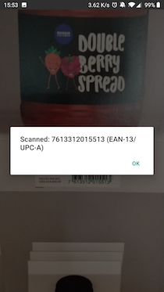

Choose the Right Scanner UI for Your Use Case#
In this guide, you will learn how to integrate the scanner into your app’s user interface to fit various use cases. You will first learn how to add the data capture view to your app and then how to further customize this view to provide the most intuitive and efficient user experience. This guide will cover three main ways of displaying the view in your app:
Display the scanner in full screen
Display the scanner in split screen
Display the scanner in a tab view
and two ways to customize its look and feel:
Implement an Aim and Scan UI
Overlay augmented reality on barcodes
Before you start…
To get the most out of this guide, please read the following:
Display the Data Capture View#
Display the Scanner in Full-Screen#
This scanning setup provides the end user with a full screen camera preview. It fits all use cases where additional information or actions are not required during scanning. Our Simple Sample uses this setup.
{kind=link}
Customize the Data Capture View#
Use an Aim and Scan UI#
This setup provides the user with the ability to aim for a barcode and only read the barcode aimed for. This UI can be extremely helpful when numerous barcodes are densely packed.
To create the Aim and Scan UI, please follow these steps:
Start the scanner in paused mode (camera preview on but capture mode disabled and not scanning).
Use our laser viewfinder to give the user a precise indication of where he should scan.
Restrict the scanning area to a thin line in the center of the screen.
Add a button to enable scanning on user tap. When the scanner is active, the button can be greyed out and display “Scanning”.
When a barcode is scanned, disable scanning.
{kind=link}